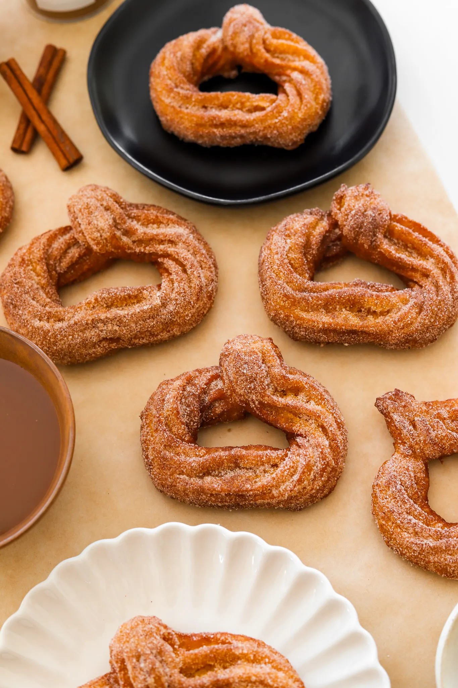

Pumpkin Churros

Prep Time: 30 minutes
Cook Time: 30 minutes
Total Time: 1 hour
Yields: 10 to 12 churros
Pumpkin season is here, and I had to
turn one of my favorite fall flavors
into something fun and delicious!
These pumpkin-shaped churros are crispy,
warm, and loaded with pumpkin spice
goodness—basically fall in every bite.
Trust me, you’ll want to make a batch
because they’ll disappear in seconds!
Pumpkin Pie Churros
Pumpkin season is here, and I had
to turn one of my favorite fall flavors
into something fun and delicious! These
pumpkin-shaped churros are crispy, warm,
and loaded with pumpkin spice
goodness—basically fall in every bite.
Trust me, you’ll want to make a batch
because they’ll disappear in seconds!
Ingredients
CINNAMON SUGAR MIXTURE
1 teaspoon pumpkin pie spice
CHURRO BATTER
2 tablespoons brown sugar
1/2 tablespoon vanilla extract
6 tablespoons unsalted butter
1 1/3 cup all-purpose flour
vegetable oil, for frying
OPTIONAL DIPPING SAUCES
Instructions
In a small bowl, whisk together sugar and
cinnamon to make the cinnamon-sugar mixture. Set aside.
In a pot, add water, sugar, vanilla extract,
pumpkin puree, unsalted butter, and salt.
Set over medium-high heat and whisk together.
Once it comes to a boil, drop the heat to low and add
the flour. Use a rubber spatula to mix together until
there are no more clumps of flour left, about 3 minutes.
Take off the heat and allow to cool for 6-8 minutes.
Add one egg and mix using a rubber spatula or in a
stand mixer until fully incorporated. Add the second
egg and mix again until fully incorporated. The dough
should be firm, elastic and just a bit sticky.
Transfer into a piping bag fitted with a tip.
Cut parchment paper into small squares. Spray with
oil and pipe pumpkins out onto each square. You
may need to use scissors to cut the stem off at
the end.
Heat oil to 325°F and drop one heart in at a time,
making sure to move slowly so it drops into the oil
smoothly. Allow it to get golden brown on one side
before flipping over. Once it’s golden on both sides,
transfer to a paper towel to drain excess oil. Repeat
until all the churros are fried.
Coat the churros in the cinnamon sugar mixture.
Enjoy with some caramel or chocolate sauce!